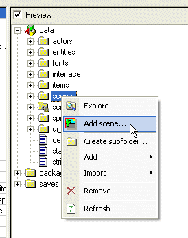
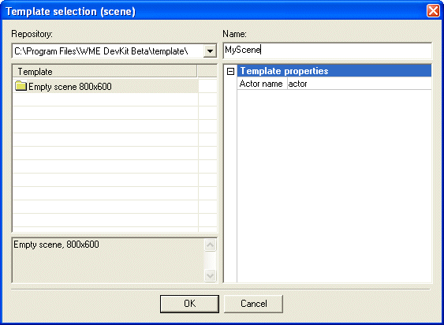
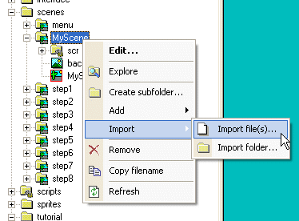
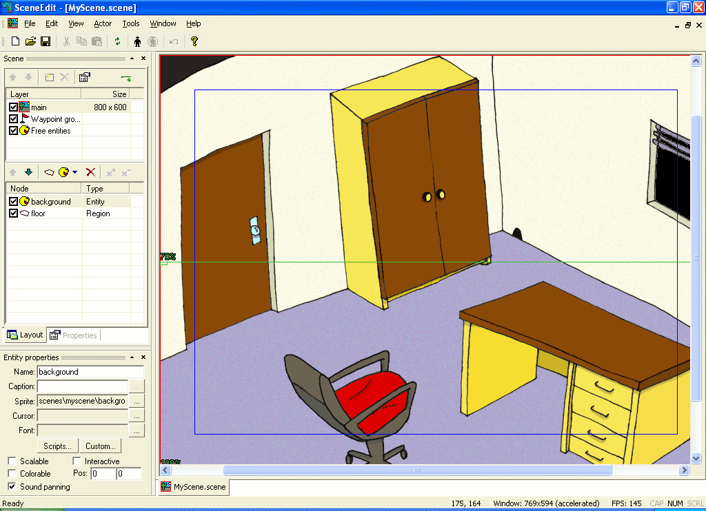
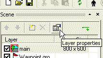
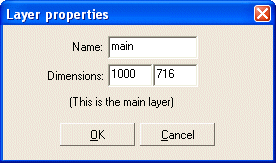
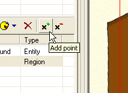
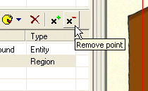
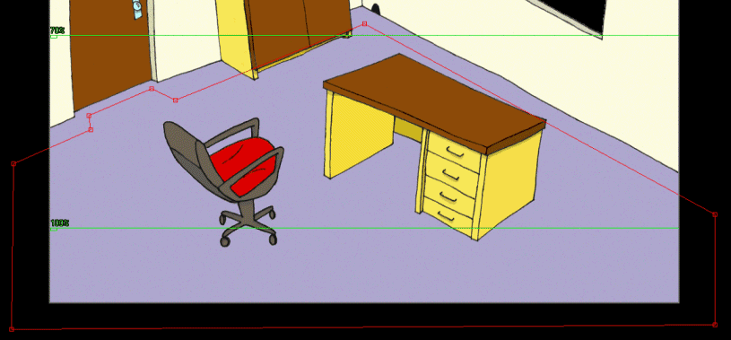

Run the ProjectMan tool and open a “scene_tut.wpr” project file (it’s located in your WME Development Kit folder in the “scene_tut” subfolder). This project already contains finished scenes for each step of this tutorial. You can quickly explore the scenes (in the “scenes” folder) using the SceneEdit tool and if you run the game (using the “Run game” command), you can see the results.
We will start by creating a new scene. Right-click the “scenes” folder and select an “Add scene…” command.

A “Template selection” window will appear. Select the “Empty scene 800x600” template and change the name to MyScene. There will be several templates available, make sure to select the right one (800x600).
(Note: you must name the scene MyScene, because the tutorial project relies on it)

Click OK and the ProjectMan will create a new scene for you.
Now we need to import the background image for our new scene. It is recommended that you store all the graphics for a scene in scene’s folder. The graphics for our tutorial scene is prepared in the “tutorial\gfx” folder. Right-click the “MyScene” folder and select the “Import->Import file…” command. Now browse to the “scene_tut\data\tutorial\gfx” folder and select the “background.bmp” file. ProjectMan will copy the file to your scene’s folder. (Note: you could as well copy the file using the Windows Explorer or whatever file manager you use)

OK, now we have a new scene with the correct background image.
You can try to test the resulting scene. Click the “Run game” button on the toolbar. The engine will run and the tutorial project will be loaded. You can see your new scene by clicking the “My Scene” item. So far it’s not very impressive, right? The actor can walk anywhere, the scene doesn’t scroll and the scaling looks weird.
Quit the engine (press Escape to return to the scene selection screen, then press Escape again to quit).
In the ProjectMan right click the “MyScene.scene” file and select the “Edit…” command (you can also double-click the file to run the editor). ProjectMan will open our scene in the SceneEdit tool.

Let’s have a brief look at the SceneEdit tool: SceneEdit allows you to edit the WME scene files. At the right side there is the scene view, here you can manipulate the scene elements. At the left side there is a “scene bar”. It shows the list of layers (we will explain the layers later in this tutorial), the list of scene nodes and properties of a selected node.
Try clicking different nodes in the node list (currently there are only two nodes: “background” and “floor”). You will see the scene view will reflect your selection and it will highlight either the background image or a rectangular region. Also the “Properties” window will change its contents as you select different nodes.
OK, when we tested the scene, it didn’t scroll, right? Let’s fix it. Our background image is 1000x716 pixels big, but the scene’s dimensions are preset to 800x600. We will change the scene dimensions to fit our background image. Highlight the “main” node in the layers list and then click the “Layer properties” button above. A “Layer properties” dialog will appear. Change the dimensions to 1000x716 and click OK.


Now, because our game runs at a resolution of 800x600 pixels and our scene is 1000x716 big, the engine will know it should scroll the scene.
The last thing we will do in this step is setting where the actor can walk and where not. Click the “floor” node in the node list. This region represents the “walkable” area within the scene. We will change the shape of the “floor” region to roughly fit the layout of the room. That way the actor won’t be able to walk at the walls etc.
The regions in WME can have virtually any shape. You can add and remove vertices of a region and move individual vertices to another position, thus forming any shape you need.
You can add a vertex using the “Add point” button. Click the button and then click somewhere within the scene view window to create a new vertex. SceneEdit will add a new vertex to the region (it will try to guess in between of which two vertices you want the new vertex to be placed). Notice that the mouse cursor will change to indicate you are placing a new vertex. You can cancel the vertex placement by clicking the right mouse button.

Similarly you can remove existing vertices using the “Remove point” button. Click the button and then click the vertex you want to remove.
Note: Regions must have at least three vertices.

|
|
You can use the numpad plus and minus keys for adding / removing region vertices and waypoints. |
You can drag and drop vertices of region using your mouse. Move the mouse pointer above a vertex (the mouse cursor will change its shape) then click and hold the left mouse button and move the mouse to move the vertex. Release the mouse button when you are done.
|
|
If you accidentally drag an object, you can cancel the drag operation by clicking the right mouse button while dragging is in progress. The object will return to its original position. Or, of course, you can use the “Undo” command. |
OK, let’s try it. Try to change the shape of the “floor” region to match the one on the picture.

Save your scene and quit the SceneEdit. Try to run the game again. The scene should now scroll and the actor will only walk on the floor.
Proceed to Step 2: Scene entities.